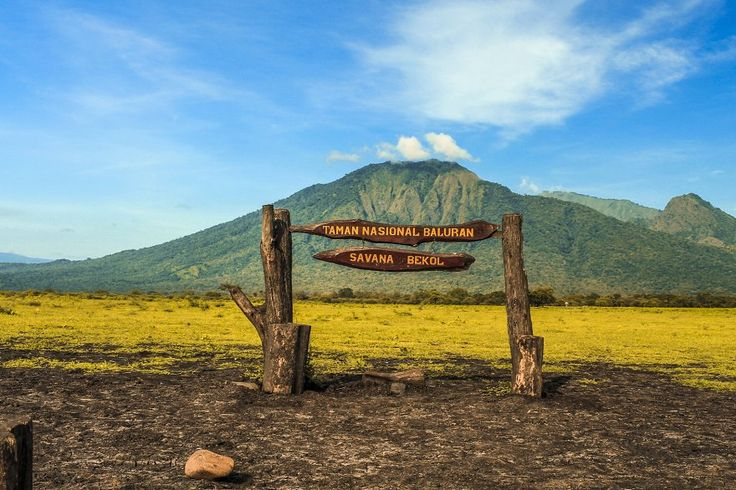
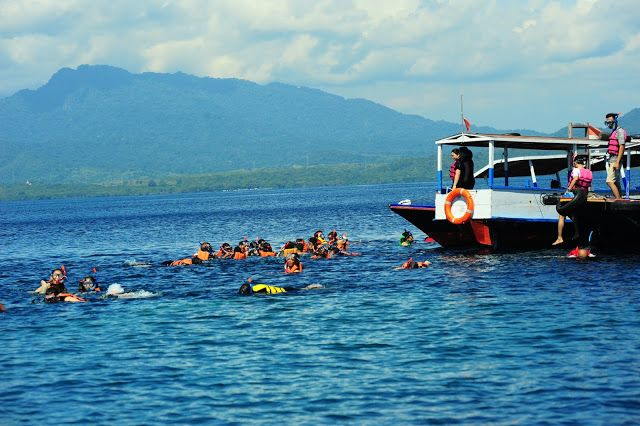

DESTINASI WISATA

Kawah Ijen
Destinasi ikonik dengan fenomena blue fire yang langka. Keindahan kawah belerang berpadu panorama pegunungan.

Legomoro
Air terjun kembar di tengah hutan pinus yang asri. Memberikan ketenangan bagi setiap pengunjung.

Pulau Merah
Terkenal dengan bukit 200 meter di bibir pantai dan sunset yang sangat memukau.

TN Baluran
"Africa van Java" dengan sabana luas, hutan kering, dan pantai yang indah.

ALAS PURWO
Padang rumput alami di Alas Purwo dengan satwa liar yang bebas berkeliaran.

Pulau Tabuhan
Pulau mungil tak berpenghuni dengan pasir putih dan spot terbaik untuk snorkeling.

De Djawatan
Hutan trembesi raksasa rimbun yang menciptakan atmosfer magis nan dramatis.

Bangsring Underwater
Wisata konservasi. Sensasi berenang bersama hiu jinak di rumah apung tengah laut.

Teluk Hijau
Permata tersembunyi dengan air laut hijau jernih dikelilingi tebing tinggi.

Desa Kemiren
Mengenal filosofi hidup Suku Osing, arsitektur rumah adat, dan ritual kopi.

Pantai Boom Marina
Marina modern elegan, tempat terbaik melihat kapal pesiar dan jembatan spiral.

Pantai Watu Dodol
Gerbang masuk Banyuwangi dengan view Selat Bali dan patung Gandrung yang ikonik.